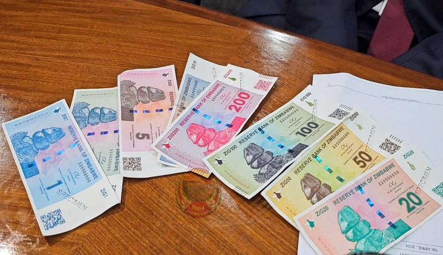

1 ZAR to Zimbabwe Dollar (ZiG): Latest Exchange Rate, Conversion Guide, and Everything You Need to Know
1 ZAR to Zimbabwe Dollar (ZiG)

For those searching for 1 ZAR to Zimbabwe Dollar (ZiG). You are probably planning to travel, send money, shop across borders, or conduct business between South Africa and Zimbabwe. Understanding the exchange rate between the South African Rand (ZAR) and the Zimbabwe Gold (ZiG) is essential because currency values change regularly due to market conditions.
In this guide, you'll learn how the exchange rate works, what influences it, how to convert ZAR to ZiG, and practical tips for getting the best value for your money.
What Is ZAR?
ZAR is the official currency code for the ,South African Rand, the legal tender for South Africa.
-
Currency Code: ZAR
-
Currency Name: South African Rand
-
Symbol: R
-
Central Bank: South African Reserve Bank (SARB)
The South African Rand is one of the most traded currencies in Africa and is widely accepted in parts of Southern Africa.
What Is Zimbabwe Gold (ZiG)?
Zimbabwe introduced the Zimbabwe Gold (ZiG) as its newest official currency to promote monetary stability and reduce inflation.
Key facts about ZiG:
-
Official currency of Zimbabwe
-
Introduced in 2024
-
Supported by reserves including gold and foreign currencies
-
Managed by the Reserve Bank of Zimbabwe (RBZ)
ZiG replaced the Zimbabwe Dollar (ZWL), which experienced years of severe inflation and instability.
1 ZAR to Zimbabwe Dollar (ZiG)
The value of 1 South African Rand in Zimbabwe Gold (ZiG) changes continuously based on the foreign exchange market.
Since exchange rates fluctuate throughout the day, there is no permanently fixed conversion rate.
When checking today's rate, always use:
-
Your bank
-
Licensed forex bureau
-
Money transfer service
-
Trusted financial websites
These sources update exchange rates regularly.
Why Does the ZAR to ZiG Exchange Rate Change?
Several economic factors influence the value of both currencies.
1. Inflation
Higher inflation weakens a country's currency over time.
2. Interest Rates
Changes in interest rates by central banks affect investor confidence and currency demand.
3. Foreign Currency Reserves
Zimbabwe's reserves help support the value of the ZiG.
4. Trade Between Countries
South Africa is Zimbabwe's largest trading partner, making trade activity an important influence on exchange rates.
5. Market Demand
When demand for the South African Rand increases, its value generally strengthens against other currencies.
How to Convert ZAR to ZiG
Converting South African Rand to Zimbabwe Gold is simple.
Formula
Amount in ZiG = Amount in ZAR × Current Exchange Rate
For example:
If the exchange rate is:
1 ZAR = X ZiG
Then:
-
10 ZAR = 10 × X
-
50 ZAR = 50 × X
-
100 ZAR = 100 × X
Replace X with the current exchange rate at the time of conversion.
Sample Conversion Table
| South African Rand | Zimbabwe Gold |
|---|---|
| 1 ZAR | Current Market Rate |
| 5 ZAR | 5 × Current Rate |
| 10 ZAR | 10 × Current Rate |
| 20 ZAR | 20 × Current Rate |
| 50 ZAR | 50 × Current Rate |
| 100 ZAR | 100 × Current Rate |
| 500 ZAR | 500 × Current Rate |
| 1,000 ZAR | 1,000 × Current Rate |
Where Can You Exchange ZAR for ZiG?
There are several options.
Banks
Commercial banks often provide secure currency exchange services.
Advantages
-
Safe
-
Reliable
-
Transparent rates
Forex Bureaus
Licensed foreign exchange bureaus are popular among travelers.
Advantages include:
-
Fast transactions
-
Competitive rates
-
Convenient locations
Money Transfer Services
International money transfer providers allow users to send money from South Africa to Zimbabwe.
Many services also offer:
-
Mobile transfers
-
Bank deposits
-
Cash pickup
Online Currency Converters
Online converters provide near real-time estimates.
These tools are useful for:
-
Travel planning
-
Online shopping
-
Business payments
-
Budgeting
Why Many Zimbabweans Use the South African Rand
The South African Rand plays a significant role in Zimbabwe's economy.
Reasons include:
-
Frequent cross-border trade
-
Employment of Zimbabweans in South Africa
-
Tourism
-
Imports from South Africa
Many businesses near the border also accept Rand payments.
Is the Exchange Rate the Same Everywhere?
No.
Different institutions may offer different exchange rates.
Factors include:
-
Service fees
-
Commission charges
-
Market demand
-
Transaction size
Always compare rates before exchanging money.
Tips for Getting the Best Exchange Rate
Compare Providers
Never exchange money at the first location without comparing rates.
Avoid Airport Exchanges
Airport exchange counters often have higher fees.
Check Live Rates
Monitor the market before making large transactions.
Exchange Larger Amounts Carefully
Large exchanges may qualify for better rates depending on the provider.
Why Businesses Monitor ZAR to ZiG
Many companies import goods from South Africa.
Changes in the exchange rate affect:
-
Import costs
-
Product pricing
-
Profit margins
-
Cross-border payments
Businesses often monitor exchange rates daily to manage costs effectively.
Travel Tips for South Africa and Zimbabwe
If you're traveling between the two countries:
-
Check the latest exchange rate before departure.
-
Carry some local currency for small purchases.
-
Keep receipts for exchanged currency where required.
-
Use licensed exchange providers.
-
Be aware of any transaction fees charged by banks or exchange services.
Frequently Asked Questions (FAQs)
How much is 1 ZAR in Zimbabwe Gold?
The value changes throughout the day based on market exchange rates. Always check a live currency converter or a licensed exchange provider for the latest rate.
Can I use South African Rand in Zimbabwe?
In some areas—especially near border towns and at certain businesses—the Rand may be accepted, but acceptance is not universal. Carrying local currency is advisable.
Why does the exchange rate change every day?
Currency values respond to supply and demand, inflation, interest rates, economic conditions, and central bank policies.
Is ZiG replacing the old Zimbabwe Dollar?
Yes. ZiG was introduced as Zimbabwe's official currency to replace the previous Zimbabwe Dollar (ZWL) and support greater monetary stability.
Understanding the 1 ZAR to Zimbabwe Dollar (ZiG) exchange rate is important for travelers, businesses, online shoppers, and anyone sending money between South Africa and Zimbabwe. Because exchange rates fluctuate throughout the day, it's always best to check the latest market rate before making a transaction.
Whether you're exchanging a single Rand or transferring larger amounts, comparing providers, watching market movements, and using licensed financial institutions can help you get better value and avoid unnecessary fees.
SEO Keywords: 1 ZAR to Zimbabwe Dollar, 1 ZAR to ZiG, ZAR to Zimbabwe Gold, South African Rand to ZiG, ZAR exchange rate, Zimbabwe currency, Rand to Zimbabwe Gold converter, ZAR to ZWG, South Africa to Zimbabwe exchange rate, ZiG currency conversion.